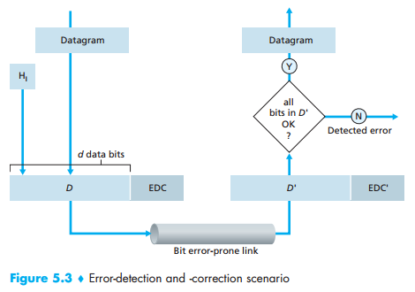
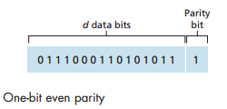
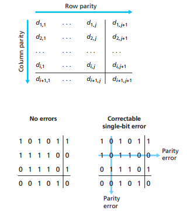
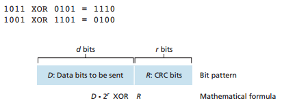

Bit-level error detection and correction: detecting and correcting the corruption of bits in a link-layer frame sent from one node to another physically connected neighboring node.
D' and EDC' are received, and may differ from the original D and EDC as a result of in-transit bit flips. The receiver must determine if they are the same as the original packets.
These techniques allow the receiver to sometimes, but not always, detect bit errors. There may still be undetected bit errors, where the receiver is unaware that the received information is affected. Because of this, the receiver might deliver a corrupted datagram to the network layer or be unaware that the contents of a field in the frame's header has been corrupted.
The information to be sent will include an additional bit, called a parity bit.
In an even parity scheme, its value is equal to the total number of 1's in the d + 1 bits so that the sum is even. In an odd parity scheme, such a value is chosen so the sum is odd.
d + 1 = 10
The receiver only counts the number of 1's in the recieved d + 1 bits. If an odd number of bits are 1's in an even parity scheme, the receiver knows at least one bit error occurred. If an even number of bits are 1's in an even parity scheme, there could be an undetected error.
In a two-dimensional parity scheme, the d bits in D are divided into i rows and j columns. A parity value is computed for each row and each column, where i + j + 1 comprise the error-detection bits.
This technique can not only detect the bit error, but correct the error using the row and column indices. The ability for the receiver to both detect and correct errors is known as Forward Error Correction (FEC).
In these methods, the d bits of data are treated as a sequence of k-bit integers, and use the resulting sum as the error-detection bits.
Bytes of data are treated as 16-bit integers and summed. The 1's complement of this sum then forms the Internet checksum that is carried in the segment header. It then checks whether the result is all 1 bits. If any bits are 0, an error is indicated.
Checksumming methods require relatively little packet overhead.
This technique is widely used in computer networks.
Given the d-bit piece of data, D, that is to be sent, the sender and receiver must agree on an r + 1 bit pattern, called a generator, G.
For a given piece of data, D, the sender will choose r additional bits, R, and append them to D such that the resulting d + r bit pattern is exactly divisible by G using modulo-2 arithmetic.
International standards have been defined for 8-, 12-, 16-, and 32-bit generators. The CRC-32 32-bit standard, which has been adopted in a number of link-level protocols, uses a generator of G[CRC-32] = 100000100110000010001110110110111.